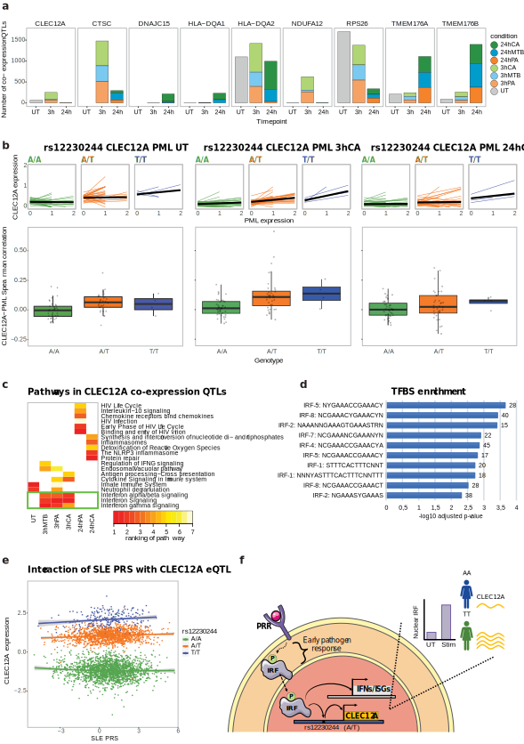

Interferon regulatory factor affects CLEC12A co-expression QTLs upon 3h pathogen stimulation in
monocytes.
a. Number of co-expression QTLs identified in each of the stimulation*timepoint combinations for
those co-expression QTLs with over 100 co-expression QTLs in at least one condition. The 3h and 24h
timepoint are colored by pathogen stimulation (green: C. Albicans (CA), blue: M. Tuberculosis (MTB),
orange: P. Aeruginosa (PA). b. The lines in the top plots show co-expression between CLEC12A and
PML (most significant co-expression QTL across the 3h stimulation conditions) for individual cells in
the untreated (left), 3h CA (middle) and 24h CA (right) condition. In these plots, individual-specific
regression lines are shown, split by genotype. The average genotype-specific regression lines are
shown in black. The bottom boxplots depict Spearman’s rank correlation between CLEC12A and PML
expression, stratified by SNP rs12230244 genotype in the monocytes per individual, in the untreated
(left), 3h CA (middle) and 24h CA (right) stimulated cells (the V2 chemistry data is plotted). Each data
point shows a single individual. Box plots show median, first and third quartiles, and 1.5× the
interquartile range. c. Heatmap of the top-5 enriched pathways within the co-expressed CLEC12A coeQTL
genes per stimulation*timepoint combination. Per combination, pathways are ranked based on
significance. White indicates that the pathway was not found to be enriched in that specific
stimulation*timepoint combination. The green box highlights pathways that are associated with all
3h stimulation conditions. d. Top 10 enriched putative transcription factor binding sites within the
CLEC12A co-expression QTL genes that: 1. showed a more positive strength of the co-expression
relationship in individuals with the TT as opposed to the AA genotype and 2. were identified in the 3h
stimulated (outer join) monocytes using the TRANSFAC database. e. Co-expression QTL analysis for
CLEC12A-SNP rs12230244 against the SLE PRS (calculated using those SLE GWAS SNPs with a P-value
threshold of <5x10-8) using whole blood bulk expression data from 3,553 individuals (BIOS
consortium). f. Proposed mechanism of action of CLEC12A co-expression QTLs. When pathogenassociated
molecular patterns bind to a pattern recognition receptor (PRR), a signaling cascade is
initiated that eventually results in phosphorylation of interferon regulatory factors (IRFs).
Phosphorylated IRF then translocates to the nucleus, where it binds to specific DNA motifs such as
IFN-stimulated response elements. This can then activate transcription of IFNs and IFN-stimulated
genes (ISGs). Additionally, IRF is expected to bind to a region containing SNP rs12230244 (or any
another SNP in high LD), thereby regulating CLEC12A expression. In this case, depending on the SNP
genotype, the IRF binding and activation of CLEC12A expression is expected to be stronger (TT
genotype) or weaker (AA genotype). Many of the identified CLEC12A co-expression QTL genes are
involved in the IFN pathway (see 4b). This has to be the result of a common upstream factor (i.e. IRF)
of CLEC12A transcription that can also activate IFNs and ISGs, but cannot be the result of a
downstream regulator because this would have led to trans-eQTL effects for the same SNP
rs12230244 (which we do not observe).